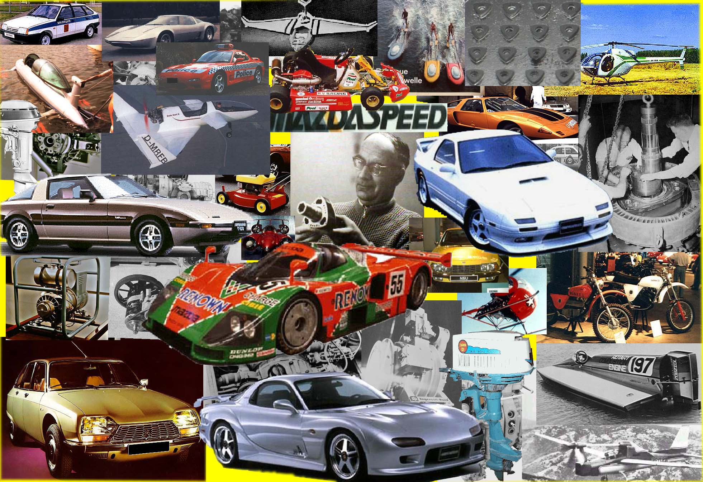

Mazda Rotary Models
From the groundbreaking Cosmo Sport to the final RX-8, explore the complete lineage of Mazda's rotary-powered vehicles. Click any model for detailed specifications, history, and gallery.
Classic Era (1967-1978)

1967-1972
Cosmo Sport 110S
The original. World's first production twin-rotor.
10A Engine
110-128 hp
1,519 built
View Details →
1968-1973
R100 / Familia Rotary
Rotary power for the masses.
10A Engine
100 hp
View Details →
1970-1978
RX-2 / Capella Rotary
Mid-size rotary sedan.
12A Engine
120-130 hp
View Details →
1971-1978
RX-3 / Savanna
Racing champion. 7-time Japanese GP winner.
10A / 12A
100-130 hp
View Details →
1972-1977
RX-4 / Luce Rotary
Flagship luxury rotary.
12A / 13A
125-135 hp
View Details →
1975-1981
RX-5 / Cosmo AP
Second-generation Cosmo.
12A / 13B
125-135 hp
View Details →
The RX-7 Dynasty (1978-2002)
1978-1985
RX-7 SA/FB
The original. Light, pure, rotary perfection.
12A / 12A Turbo
100-165 hp
View Details →
1986-1991
RX-7 FC
Modern styling, turbo power, Porsche competitor.
13B Turbo II
182-200 hp
View Details →
1992-2002
RX-7 FD
The definitive rotary sports car. Sequential twin-turbo.
13B-REW
255-276 hp
5.1s 0-60
View Details →
Modern Era (2003-2012)
Quick Comparison
| Model | Years | Engine | Power | Notable |
|---|---|---|---|---|
| Cosmo Sport | 1967-1972 | 10A | 110-128 hp | First production rotary |
| RX-3 Savanna | 1971-1978 | 10A/12A | 100-130 hp | 7× Japanese GP winner |
| RX-7 SA/FB | 1978-1985 | 12A | 100-165 hp | Saved Mazda in oil crisis |
| RX-7 FC | 1986-1991 | 13B Turbo | 182-200 hp | Porsche 944 competitor |
| RX-7 FD | 1992-2002 | 13B-REW | 255-276 hp | Sequential twin-turbo |
| RX-8 | 2003-2012 | Renesis | 189-238 hp | Last production rotary |